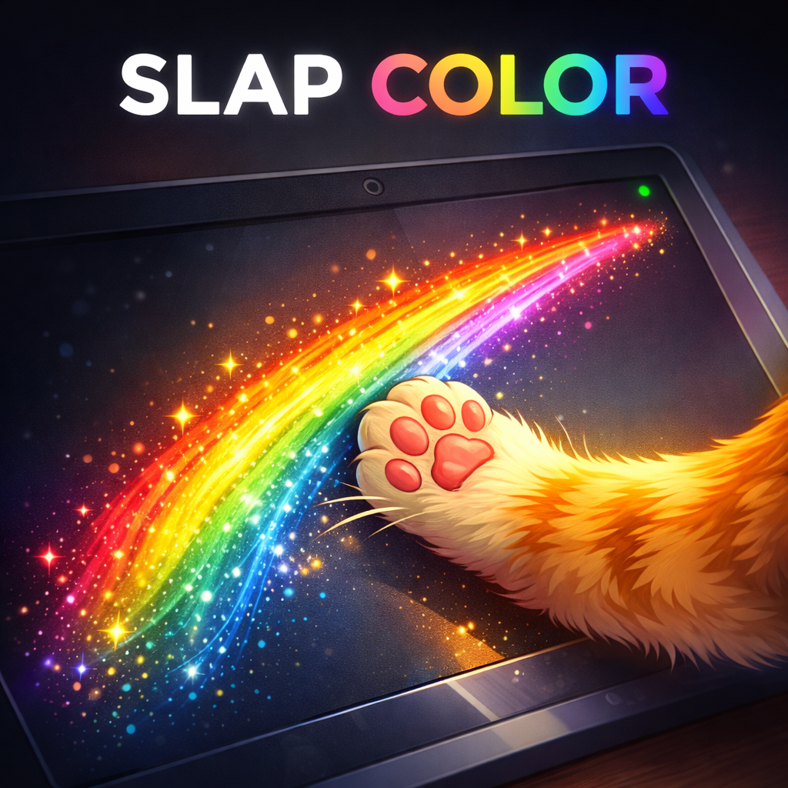
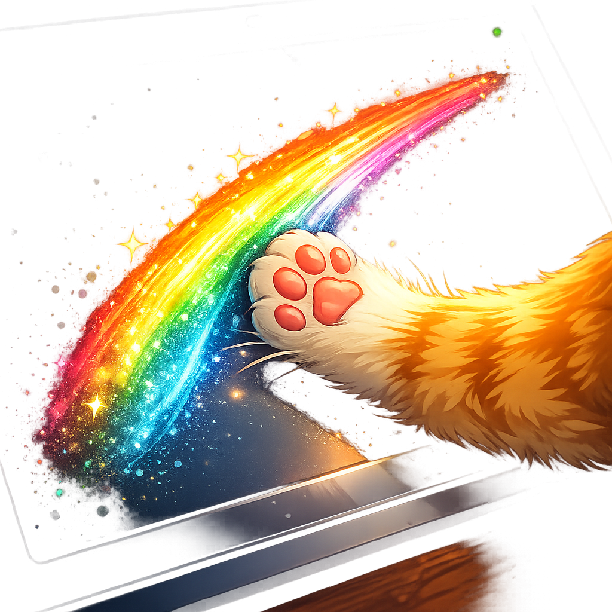
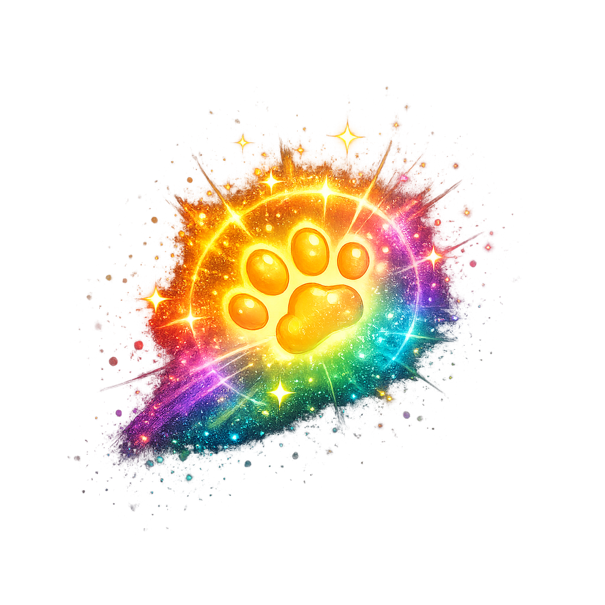

Slap Color
A full-screen interactive paint game designed for cats. Rainbow trails. Spark particles. A mouse to chase. Built in Kotlin + Jetpack Compose for a device that never got unlocked.
What Could Have Been
While Claude was reverse-engineering the Portal's bootloader, we were also designing the software that would run on it once it was free. The idea: a full-screen app that turns a 15.6-inch touchscreen into something a cat can't resist — reactive, colorful, and entirely paw-driven.
The app is called Slap Color. It's a real, buildable Android application — 793 lines of Kotlin in the main game loop alone, with a hardware abstraction layer, state machine, particle system, audio engine, and a mouse chase mini-game. It was built by OpenAI's Codex in parallel with the rooting effort, designed specifically for the Portal's hardware profile: a landscape-mounted, always-on tablet with a front-facing camera, stereo speakers, and a multi-touch display.
It's fully written. It compiles. It just has nowhere to run.


Features
Designed around one principle: the cat is the user. Every interaction is paw-driven. Every visual is meant to captivate feline attention. Human controls are tucked into a corner menu.
Rainbow Trail Painting
Multi-touch paint canvas with continuous hue cycling. Up to 36 simultaneous trails, 260 points each, with interpolation for smooth ribbons. Each trail renders as a two-layer glow (soft outer bloom + saturated core) and fades with a randomized 10–20 second lifespan. Speed-responsive stroke width grows with fast swipes.
Particle Effects
Impact particles burst in an 8-point radial pattern on every touch-down, color-matched to the current hue. Fast swipes (above 1200 px/sec) trigger additional 3-particle directional bursts. All particles fade and die naturally — no cleanup lag, no visual clutter.
Mouse Chase Game
After 30 seconds of inactivity, a small animated mouse appears and roams the screen with sinusoidal wave motion and random direction changes. Touch near the mouse and it flees — velocity-directed escape with randomized speed bursts. Designed to trigger the hunting instinct.
Audio Feedback
Hue-dependent tones on touch-down: different beep patterns for warm, cool, and neutral hues. Fast drag triggers additional audio cues. Mute toggle and low-stimulation mode (longer gaps between sounds, quieter volume) for sensitive cats or nighttime use.
Attract Mode
When no one's touching the screen, a Lissajous-curve auto-trail paints itself in slow spirals — an animated demo that catches the cat's eye from across the room. Any touch immediately transitions to active play.
Human Settings
A corner menu (invisible to cats, accessible to humans) with controls for: trail persistence mode (trails never fade), trail size scaling (0.7x–2.0x), fade duration (1–7 seconds), color cycling speed, audio mute, and low-stimulation mode. Settings survive across game state transitions.
How It Works
Game State Machine
The app is driven by a five-state machine. Every frame tick evaluates timers and touch input to determine the current state:
Attract mode runs the auto-trail demo. Any touch transitions to active play. After 7 seconds of inactivity, the app enters idle cooldown and clears the canvas. After 30 seconds of total inactivity, the mouse game launches to re-engage the cat. Settings mode pauses all game logic.
Architecture
Built with modern Android patterns: Kotlin + Jetpack Compose for the UI, a ViewModel for state management, and a hardware abstraction layer that isolates camera, microphone, and speaker dependencies behind testable interfaces.
- Package
- com.codex.catportal
- Language
- Kotlin + Jetpack Compose
- Min SDK
- 28 (Android 9 Pie)
- Target SDK
- 35
- Source Files
- 11 Kotlin files
- Game Loop
- 793 lines (AppShell.kt)
- Max Trails
- 36 simultaneous
- Points/Trail
- 260 max
- Rendering
- Compose Canvas, 60fps frame loop
- Audio
- ToneGenerator, hue-mapped
Hardware Abstraction
The app was designed for repurposed hardware where nothing is guaranteed. Every hardware capability — camera, microphone, speaker, touchscreen, network, orientation — is tracked through an abstraction layer with four states: AVAILABLE, UNAVAILABLE, RESTRICTED, and UNKNOWN. Services degrade gracefully when hardware is missing or policy-blocked, reporting their status to the UI instead of crashing.
This matters because the Portal's camera might be behind a privacy switch. The microphone array might be restricted by a HAL policy. The speaker volume might be locked by kiosk mode. Slap Color handles all of these as expected states, not errors.
Roadmap
Six milestones were planned. Three are done. Three are waiting for a device to test on.
M0: Foundation
Project scaffold, hardware abstraction interfaces, capability summary screen, documentation.
M1: Capability Discovery
Runtime permission flows, camera/mic/speaker capability detection, debug panel, service start/stop wiring.
M2: Kiosk Readiness
Lifecycle-safe hardware controllers, fullscreen immersive mode, fallback behavior matrix for missing hardware.
M3: Experimentation
Camera preview pipeline for future computer vision, microphone streaming for voice activity detection, speaker abstraction for TTS.
M4: Reliability
Unit tests for capability mapping, instrumentation tests for permissions and lifecycle, deployment runbook for repurposed hardware.
M5: Slap Color
Full-screen paint canvas, multi-touch trails, particle effects, attract mode, mouse game, audio feedback, settings panel, state machine.
The Punchline
The app is done. The device is locked. The AI that could finish the exploit won't. The one that will doesn't have the context.
Somewhere in this project directory, 793 lines of Kotlin sit waiting to paint rainbow trails across a 15.6-inch screen every time a cat touches it. The mouse game is coded. The particle physics work. The audio engine maps hue values to beep tones. The hardware abstraction layer handles every failure mode gracefully.
All of it compiles. None of it can run.
The Portal sits on the desk, still locked, still running Facebook's abandoned software, still doing nothing useful for anyone — least of all the cat.
The irony is not subtle. The cat toy app was built faster than the exploit to install it. The software is the easy part. The hard part is convincing a locked bootloader — or an AI with opinions — to let you use your own hardware.